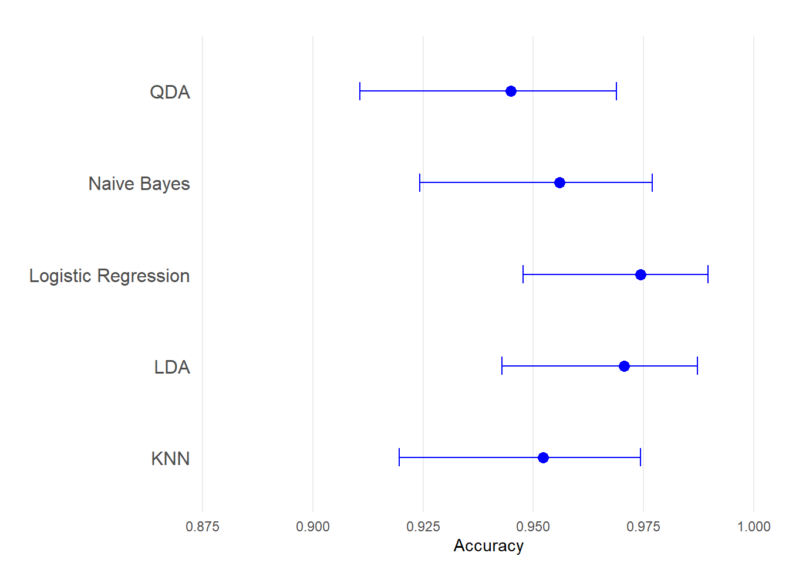

library(data.table)
library(tidyverse)
library(psych)
library(corrplot)
library(caret)
library(pROC)
library(PRROC)
library(RColorBrewer)
set.seed(12)Introduction
This blog is an exercise on classification methods using the Breast Cancer dataset which is sourced from the UCI Machine Learning Repository. This dataset contains different variables used to classify tumors as either benign or malignant.
Exploratory Analysis and Preprocessing
We will start by reading the documentation of the dataset, which will tell us how the data is organized. For example, it may provide information on the number of variables and observations, how to interpret certain variables, how missing values are encoded, etc. We will then proceed to check for possible outliers, class imbalance, and the presence of redundant continuous variables.
Importing the Dataset
After reading the documentation, we’ll load the dataset into R and assign appropriate column names.
path <- "dataset/breast-cancer-wisconsin.data"
data <- read.table(path, sep = ",")
colnames(data) <- c("Sample_code_number", "Clump_thickness",
"Uniformity_of_cell_size", "Uniformity_of_cell_shape",
"Marginal_adhesion", "Single_epithelial_cell_size",
"Bare_nuclei", "Bland_chromatin", "Mitoses",
"Normal_nucleoli", "Class")
str(data)'data.frame': 699 obs. of 11 variables:
$ Sample_code_number : int 1000025 1002945 1015425 1016277 1017023 1017122 1018099 1018561 1033078 1033078 ...
$ Clump_thickness : int 5 5 3 6 4 8 1 2 2 4 ...
$ Uniformity_of_cell_size : int 1 4 1 8 1 10 1 1 1 2 ...
$ Uniformity_of_cell_shape : int 1 4 1 8 1 10 1 2 1 1 ...
$ Marginal_adhesion : int 1 5 1 1 3 8 1 1 1 1 ...
$ Single_epithelial_cell_size: int 2 7 2 3 2 7 2 2 2 2 ...
$ Bare_nuclei : chr "1" "10" "2" "4" ...
$ Bland_chromatin : int 3 3 3 3 3 9 3 3 1 2 ...
$ Mitoses : int 1 2 1 7 1 7 1 1 1 1 ...
$ Normal_nucleoli : int 1 1 1 1 1 1 1 1 5 1 ...
$ Class : int 2 2 2 2 2 4 2 2 2 2 ...Missing Values and Variable Encoding
This dataset uses "?" to represent missing values. These need to be replaced with NA for proper handling in R. We then remove rows containing missing values. Additionally, some variables are encoded incorrectly and need to be transformed into their appropriate data types.
data[data == "?"] <- NA
data <- na.omit(data)
data$Sample_code_number <- NULL
data$Class <- as.factor(ifelse(data$Class == 2, "benign", "malignant"))
data$Bare_nuclei <- as.integer(data$Bare_nuclei)
str(data)'data.frame': 683 obs. of 10 variables:
$ Clump_thickness : int 5 5 3 6 4 8 1 2 2 4 ...
$ Uniformity_of_cell_size : int 1 4 1 8 1 10 1 1 1 2 ...
$ Uniformity_of_cell_shape : int 1 4 1 8 1 10 1 2 1 1 ...
$ Marginal_adhesion : int 1 5 1 1 3 8 1 1 1 1 ...
$ Single_epithelial_cell_size: int 2 7 2 3 2 7 2 2 2 2 ...
$ Bare_nuclei : int 1 10 2 4 1 10 10 1 1 1 ...
$ Bland_chromatin : int 3 3 3 3 3 9 3 3 1 2 ...
$ Mitoses : int 1 2 1 7 1 7 1 1 1 1 ...
$ Normal_nucleoli : int 1 1 1 1 1 1 1 1 5 1 ...
$ Class : Factor w/ 2 levels "benign","malignant": 1 1 1 1 1 2 1 1 1 1 ...
- attr(*, "na.action")= 'omit' Named int [1:16] 24 41 140 146 159 165 236 250 276 293 ...
..- attr(*, "names")= chr [1:16] "24" "41" "140" "146" ...
Tip
Reading the dataset documentation is important for understanding how missing values and variables are encoded. For example, missing values in this dataset are not labeled as NA by default, and variables such as Bare_nuclei and Class needed to be converted to the appropriate data types (integer and factor, respectively).
Analyze the continuous variables
To identify redundant variables, we analyze correlations among continuous variables. High collinearity can negatively impact model performance. Hence, we can address this either by removing one of the variables or combind them into a new variable.
data_corr <- cor(data[, -10])
pairs.panels(data_corr, cex.labels = 0.6, ellipses = FALSE)The variables Uniformity_of_cell_size and Uniformity_of_cell_shape are highly correlated. Here, we’ll create a new variable, Cell_morphology, by randomly sampling values from these two columns row-wise.
data$Cell_Morphology <- apply(data[, c("Uniformity_of_cell_size", "Uniformity_of_cell_shape")],
MARGIN = 1,
FUN = sample,
size = 1)
data$Uniformity_of_cell_size <- NULL
data$Uniformity_of_cell_shape <- NULL
str(data)'data.frame': 683 obs. of 9 variables:
$ Clump_thickness : int 5 5 3 6 4 8 1 2 2 4 ...
$ Marginal_adhesion : int 1 5 1 1 3 8 1 1 1 1 ...
$ Single_epithelial_cell_size: int 2 7 2 3 2 7 2 2 2 2 ...
$ Bare_nuclei : int 1 10 2 4 1 10 10 1 1 1 ...
$ Bland_chromatin : int 3 3 3 3 3 9 3 3 1 2 ...
$ Mitoses : int 1 2 1 7 1 7 1 1 1 1 ...
$ Normal_nucleoli : int 1 1 1 1 1 1 1 1 5 1 ...
$ Class : Factor w/ 2 levels "benign","malignant": 1 1 1 1 1 2 1 1 1 1 ...
$ Cell_Morphology : int 1 4 1 8 1 10 1 1 1 1 ...
- attr(*, "na.action")= 'omit' Named int [1:16] 24 41 140 146 159 165 236 250 276 293 ...
..- attr(*, "names")= chr [1:16] "24" "41" "140" "146" ...Checking for Class Imbalance
Class imbalance is a common issue in classification tasks. we analyze the distribution of the target variable (Class) to assess the extent of imbalance.
data |>
count(Class) |>
mutate(Percentage = round((n / nrow(data)) * 100, 2)) Class n Percentage
1 benign 444 65.01
2 malignant 239 34.99The dataset shows a mildly imbalanced distribution, with the minority class representing approximately 35% of the data. This level of imbalance typically does not significantly affect model performance, and models can often be trained directly on the original data. If the imbalance were severe, techniques such as upsampling or downsampling could be applied.
Splitting the Dataset
To prepare for model training, we split the dataset into training, validation, and test sets, allocating 70% of the data for training. We use cross-validation to ensure robust evaluation during model development.
train <- createDataPartition(data$Class, p = 0.7, list = FALSE)
data.trn <- data[train, ]
data.tst <- data[-train, ]
ctrl <- trainControl(method = "cv", # K-Fold cross-validation
number = 10, # 10 folds
returnResamp = 'none',
classProbs = TRUE,
savePredictions = TRUE,
summaryFunction = twoClassSummary)Modeling
Next, we fit different classification models to predict whether a tumor is malignant or benign based on the variables. Finally, we will evaluate the models using their respective confusion matrices and other performance metrics.
Logistic regression
Logistic regression is one of the simplest and most interpretable classification algorithms. We train the model using cross-validation and evaluate its performance on the test set.
glm.fit <- train(Class ~ .,
data = data.trn,
method = "glm", # Generalized linear model
family = "binomial", # Logistic regression
trControl = ctrl,
metric = "ROC")
glm.pred <- predict(glm.fit, newdata = data.tst, type = "prob")
glm.pred <- glm.pred[, 2]
glm.class <- ifelse(glm.pred > 0.5, "malignant", "benign")
logistic_cm <- confusionMatrix(data = as.factor(glm.class),
reference = as.factor(data.tst$Class),
positive = "malignant")
logistic_cmConfusion Matrix and Statistics
Reference
Prediction benign malignant
benign 130 3
malignant 3 68
Accuracy : 0.9706
95% CI : (0.9371, 0.9891)
No Information Rate : 0.652
P-Value [Acc > NIR] : <2e-16
Kappa : 0.9352
Mcnemar's Test P-Value : 1
Sensitivity : 0.9577
Specificity : 0.9774
Pos Pred Value : 0.9577
Neg Pred Value : 0.9774
Prevalence : 0.3480
Detection Rate : 0.3333
Detection Prevalence : 0.3480
Balanced Accuracy : 0.9676
'Positive' Class : malignant
To understand which features contribute most to the model, we use the varImp() function.
# Identify and rank the most important variables
varImp(glm.fit)glm variable importance
Overall
Bare_nuclei 100.00
Clump_thickness 78.57
Cell_Morphology 28.26
Bland_chromatin 27.03
Single_epithelial_cell_size 24.21
Mitoses 16.35
Normal_nucleoli 10.58
Marginal_adhesion 0.00K-Nearest Neighbors (KNN)
KNN is a simple non-parametric method that predicts the class of a sample based on the majority class of its nearest neighbors.
knn.fit <- train(Class ~ ., data = data.trn, method = "knn",
trControl = ctrl,
preProcess = c("center","scale"),
tuneGrid =data.frame(k=seq(5,100,by=5)),
metric = "ROC")
knn.pred <- predict(knn.fit, data.tst)
knn_cm <- confusionMatrix(as.factor(knn.pred),
reference =as.factor(data.tst$Class),
positive = "malignant")
knn_cmConfusion Matrix and Statistics
Reference
Prediction benign malignant
benign 130 6
malignant 3 65
Accuracy : 0.9559
95% CI : (0.9179, 0.9796)
No Information Rate : 0.652
P-Value [Acc > NIR] : <2e-16
Kappa : 0.9018
Mcnemar's Test P-Value : 0.505
Sensitivity : 0.9155
Specificity : 0.9774
Pos Pred Value : 0.9559
Neg Pred Value : 0.9559
Prevalence : 0.3480
Detection Rate : 0.3186
Detection Prevalence : 0.3333
Balanced Accuracy : 0.9465
'Positive' Class : malignant
plot(knn.fit)Linear Discriminant Analysis
LDA assumes that the predictors follow a normal distribution and aims to maximize the separation between classes.
lda.fit <- train(Class ~ .,
data = data.trn,
method = "lda",
trControl = ctrl,
metric = "ROC")
# Generate probabilities for LDA
lda.pred <- predict(lda.fit, newdata = data.tst, type = "prob")
lda.class <- ifelse(lda.pred[, "malignant"] > 0.5, "malignant", "benign")
lda_cm <- confusionMatrix(data = as.factor(lda.class),
reference = as.factor(data.tst$Class),
positive = "malignant")
lda_cmConfusion Matrix and Statistics
Reference
Prediction benign malignant
benign 130 5
malignant 3 66
Accuracy : 0.9608
95% CI : (0.9242, 0.9829)
No Information Rate : 0.652
P-Value [Acc > NIR] : <2e-16
Kappa : 0.913
Mcnemar's Test P-Value : 0.7237
Sensitivity : 0.9296
Specificity : 0.9774
Pos Pred Value : 0.9565
Neg Pred Value : 0.9630
Prevalence : 0.3480
Detection Rate : 0.3235
Detection Prevalence : 0.3382
Balanced Accuracy : 0.9535
'Positive' Class : malignant
Quadradic Discriminant Analysis
QDA is similar to LDA but allows for each class to have its own covariance matrix, making it more flexible for non-linear boundaries.
qda.fit <- train(Class ~ .,
data = data.trn,
method = "qda",
trControl = ctrl,
metric = "ROC")
qda.pred <- predict(qda.fit, newdata = data.tst, type = "prob")
qda.class <- ifelse(qda.pred[, "malignant"] > 0.5, "malignant", "benign")
qda_cm <- confusionMatrix(data = as.factor(qda.class),
reference = as.factor(data.tst$Class),
positive = "malignant")
qda_cmConfusion Matrix and Statistics
Reference
Prediction benign malignant
benign 122 0
malignant 11 71
Accuracy : 0.9461
95% CI : (0.9056, 0.9728)
No Information Rate : 0.652
P-Value [Acc > NIR] : < 2.2e-16
Kappa : 0.8853
Mcnemar's Test P-Value : 0.002569
Sensitivity : 1.0000
Specificity : 0.9173
Pos Pred Value : 0.8659
Neg Pred Value : 1.0000
Prevalence : 0.3480
Detection Rate : 0.3480
Detection Prevalence : 0.4020
Balanced Accuracy : 0.9586
'Positive' Class : malignant
Naive Bayes
Naive Bayes is a probabilistic classifier based on Bayes’ theorem, assuming independence among predictors.
nb.fit <- train(Class ~ .,
data = data.trn,
method = "naive_bayes",
trControl = ctrl,
metric = "ROC")
nb.pred <- predict(nb.fit, newdata = data.tst, type = "prob")
nb.class <- ifelse(nb.pred[, "malignant"] > 0.5, "malignant", "benign")
nb_cm <- confusionMatrix(data = as.factor(nb.class),
reference = as.factor(data.tst$Class),
positive = "malignant")
nb_cmConfusion Matrix and Statistics
Reference
Prediction benign malignant
benign 124 0
malignant 9 71
Accuracy : 0.9559
95% CI : (0.9179, 0.9796)
No Information Rate : 0.652
P-Value [Acc > NIR] : < 2.2e-16
Kappa : 0.9056
Mcnemar's Test P-Value : 0.007661
Sensitivity : 1.0000
Specificity : 0.9323
Pos Pred Value : 0.8875
Neg Pred Value : 1.0000
Prevalence : 0.3480
Detection Rate : 0.3480
Detection Prevalence : 0.3922
Balanced Accuracy : 0.9662
'Positive' Class : malignant
Performance
AUC-ROC Curve Analysis
Code
# ---- Function to calculate and return the ROC curves for a given mode -------
calculate_roc <- function(model, test_data, response_var, positive_class, predictor_type = "prob") {
# Generate predicted probabilities
pred_probs <- predict(model, newdata = test_data, type = predictor_type)
# Ensure the response variable is a factor with correct levels
response <- test_data[[response_var]]
# Calculate ROC curve
roc_curve <- roc(
response = response,
predictor = pred_probs[, positive_class], # Probability for the positive class
levels = levels(response),
direction = "<" # Higher values indicate the positive class
)
return(roc_curve)
}
# ---- Calculate ROC curves for all models -------
# Logistic Regression
roc_glm <- calculate_roc(
model = glm.fit,
test_data = data.tst,
response_var = "Class",
positive_class = "malignant"
)
# KNN
roc_knn <- calculate_roc(
model = knn.fit,
test_data = data.tst,
response_var = "Class",
positive_class = "malignant"
)
# LDA
roc_lda <- calculate_roc(
model = lda.fit,
test_data = data.tst,
response_var = "Class",
positive_class = "malignant")
# QDA
roc_qda <- calculate_roc(
model = qda.fit,
test_data = data.tst,
response_var = "Class",
positive_class = "malignant"
)
# Naive Bayes
roc_nb <- calculate_roc(
model = nb.fit,
test_data = data.tst,
response_var = "Class",
positive_class = "malignant"
)
# Extract AUC values
auc_glm <- round(auc(roc_glm), 2)
auc_knn <- round(auc(roc_knn), 2)
auc_lda <- round(auc(roc_lda), 2)
auc_qda <- round(auc(roc_qda), 2)
auc_nb <- round(auc(roc_nb), 2)
# ------ Graph --------
par(pty = "s") # Set square aspect ratio
# Plot ROC Curves
plot(roc_glm, col = "#1B9E77", lwd = 3, percent = TRUE,
main = "ROC Curve Comparison",
xlab = "False Positive rate",
ylab = "True Positive rate",
legacy.axes = TRUE)
plot(roc_knn, col = "#D95F02", lwd = 3, percent = TRUE, add = T)
plot(roc_lda, col = "#7570B3", lwd = 3, percent = TRUE, add = T)
plot(roc_qda, col = "#E7298A", lwd = 3, percent = TRUE, add = T)
plot(roc_nb, col = "#66A61E", lwd = 3, percent = TRUE, add = T)
# Add Legend with AUC values
legend("bottomright",
legend = c(
paste("Logistic (AUC =", auc_glm, ")"),
paste("KNN (AUC =", auc_knn, ")"),
paste("LDA (AUC =", auc_lda, ")"),
paste("QDA (AUC =", auc_qda, ")"),
paste("Naive Bayes (AUC =", auc_nb, ")")
),
col = c("#1B9E77", "#D95F02", "#7570B3", "#E7298A", "#66A61E"),
lwd = 2)
Code
# Reset par() variables
par(pty = "m")The AUC-ROC curves show how well each model can discriminate between malignant and benign at all classification thresholds. An AUC of 1.0 indicates a perfect classifier that can distinguish between the two classes without error. Logistic regression and KNN achieved an AUC of 1, indicating perfect classification performance. LDA, QDA, and Naive Bayes also performed well with AUC values close to 1.
Precision Recall Curve
Code
# Correct Precision-Recall Curve Plotting with PRROC
plot_pr_curve <- function(model, test_data, true_labels, positive_class, add = FALSE, color = "blue") {
# Generate predicted probabilities for the positive class
pred_probs <- predict(model, newdata = test_data, type = "prob")[, positive_class]
# Generate PR curve
pr <- pr.curve(scores.class0 = pred_probs,
weights.class0 = ifelse(true_labels == positive_class, 1, 0),
curve = TRUE)
# Plot PR curve
plot(pr, main = "Precision-Recall Curve ", add = add, col = color, auc.main = FALSE, legend = FALSE)
# Return AUC value
return(pr$auc.integral)
}
# Generate PR Curves for All Models
pr_aucs <- c(
Logistic = plot_pr_curve(glm.fit, data.tst, data.tst$Class, "malignant", color = "#1B9E77"),
KNN = plot_pr_curve(knn.fit, data.tst, data.tst$Class, "malignant", add = TRUE, color = "#D95F02"),
LDA = plot_pr_curve(lda.fit, data.tst, data.tst$Class, "malignant", add = TRUE, color = "#7570B3"),
QDA = plot_pr_curve(qda.fit, data.tst, data.tst$Class, "malignant", add = TRUE, color = "#E7298A"),
NaiveBayes = plot_pr_curve(nb.fit, data.tst, data.tst$Class, "malignant", add = TRUE, color = "#66A61E")
)
# Add Legend with AUC
legend("bottomleft",
legend = paste(names(pr_aucs), "(AUC =", round(pr_aucs, 2), ")"),
col = c("#1B9E77", "#D95F02", "#7570B3", "#E7298A", "#66A61E"),
lty = 1, cex = 0.8, lwd = 2)Since the dataset is imbalanced, the false positive rate in the ROC-AUC curve is often replaced with precision to better evaluate model performance. In this context, the minority class (malignant) is important, so we prioritize models that effectively minimize false negatives. Logistic regression, KNN, and LDA all have AUC of 0.99 while QDA and Naive bayes performs slightly lower.
Accuracy
Code
#----- Data frame of model performance metrics --------
model_data <- data.frame(
Model = c("Logistic Regression", "KNN", "LDA", "QDA",
"Naive Bayes"),
# accuracy values
accuracy = c(logistic_cm$overall["Accuracy"],
knn_cm$overall["Accuracy"],
lda_cm$overall["Accuracy"],
qda_cm$overall["Accuracy"],
nb_cm$overall["Accuracy"]),
# Lower confidence interval
Lower = c(logistic_cm$overall["AccuracyLower"],
knn_cm$overall["AccuracyLower"],
lda_cm$overall["AccuracyLower"],
qda_cm$overall["AccuracyLower"],
nb_cm$overall["AccuracyLower"]),
# Upper confidence interval
Upper = c(logistic_cm$overall["AccuracyUpper"],
knn_cm$overall["AccuracyUpper"],
lda_cm$overall["AccuracyUpper"],
qda_cm$overall["AccuracyUpper"],
nb_cm$overall["AccuracyUpper"]))
#----- plot -----
ggplot(model_data, aes(x = accuracy, y = Model)) +
geom_point(size = 3, color = "blue") +
geom_errorbarh(aes(xmin = Lower, xmax = Upper), height = 0.2, color = "blue") +
labs(title = "",
x = "Accuracy",
y = "") +
scale_x_continuous(limits = c(0.88, 1)) +
theme_minimal() +
theme(panel.grid.major.y = element_blank(),
panel.grid.minor = element_blank(),
axis.text.y = element_text(size = 12),
plot.title = element_text(hjust = 0.5))
Accuracy provides a direct (baseline) measure of model performance on correctly classified instances. All the models performed well on this metric.
Conclusion
Logistic Regression consistently outperformed other models across all metrics, hence emerges as the preferred model for this dataset.